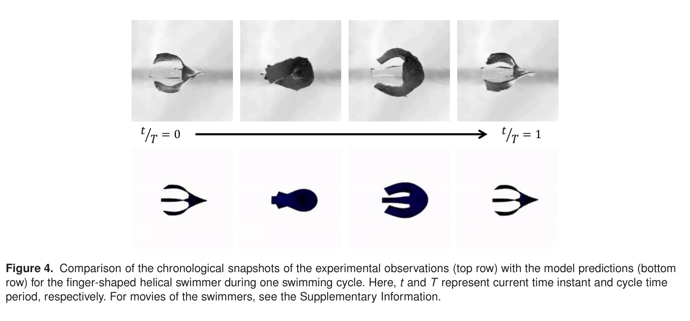
Magnetic soft robotsLow-Re swimmers designed through experiments and CFD-informed modeling.
Dr. Ratnadeep Pramanik studies how slender, soft, and multifunctional structures deform, move, and interact with their surroundings. His research connects piezoceramics, hydrogels, xerogels, smart composites, magnetic soft robotic swimmers, soft robotic swarms, and mechanically resolved deployment of braided endovascular implants for brain aneurysms through finite-element modeling, contact mechanics, fluid-structure interaction, nonlinear material models, experiments, and design analysis.

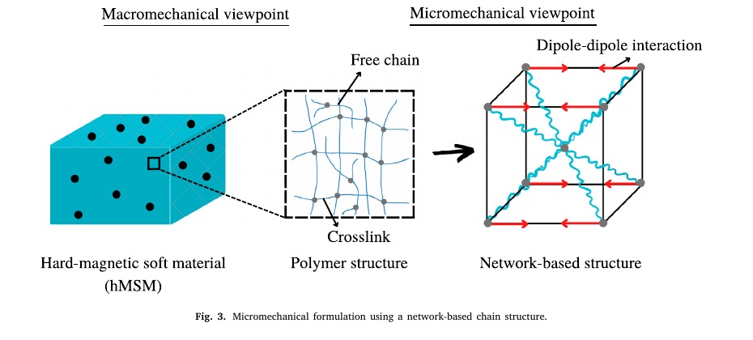
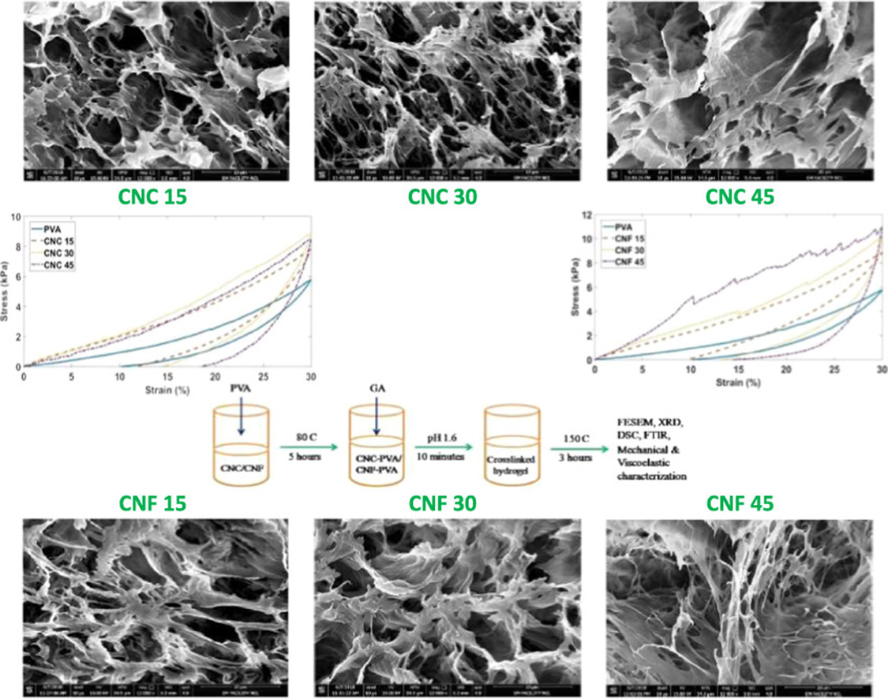
A research path organized by physical systems, signature figures, and representative papers.
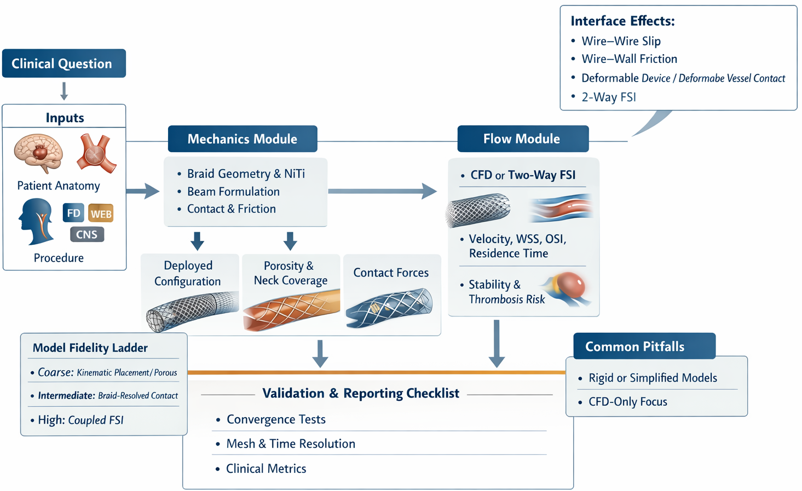
Patient-specific Contour simulations resolve the braid, catheter-style release, frictional contact, deformable aneurysm walls, and neck-level deployment metrics in a single mechanics workflow.
Miniaturized magnetically actuated swimmers are studied through experiments, computational fluid dynamics, and design maps linking geometry, magnetization, elasticity, and viscous drag to swimming performance.
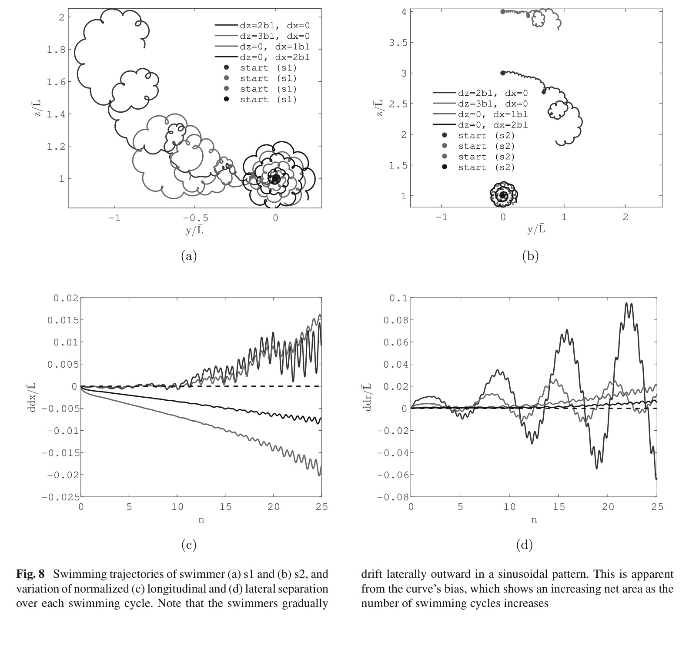
Hydrodynamic interaction between deformable magnetic swimmers produces attraction, repulsion, lateral drift, and three-dimensional collective trajectories without prescribing explicit swarm rules.
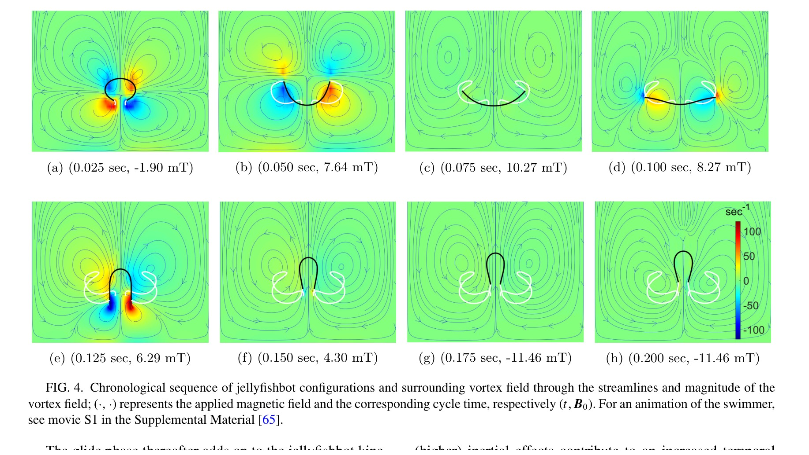
Large-deformation FSI models resolve soft robotic propulsion, vortex-mediated swimming, and time-dependent deformation in biological and bio-inspired locomotion problems.
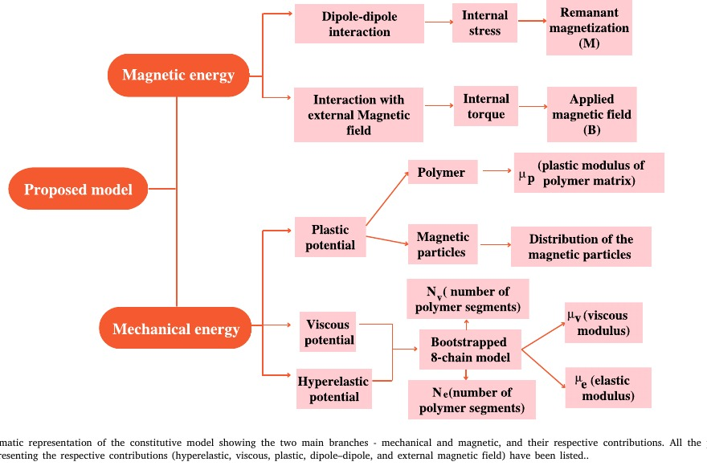
Micromechanics and constitutive modeling are used to connect magnetic inclusions, soft matrix response, instabilities, and architecture-dependent behavior in magnetically active soft materials.
Experimental and theoretical characterization of polymeric soft materials connects morphology, anisotropy, reinforcement, large deformation, and biomedical material response.
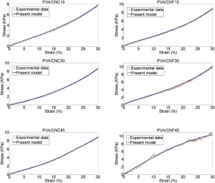
Compact constitutive models describe creep, relaxation, rate dependence, and soft biological matter response using fractal, viscoelastic, hyperelastic, and damage-based descriptions.
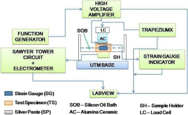
Early work on piezoceramics and piezocomposites addressed creep-fatigue loading, electro-mechanical coupling, grain-size effects, magnetoelectric nanocomposites, and effective-property modeling.
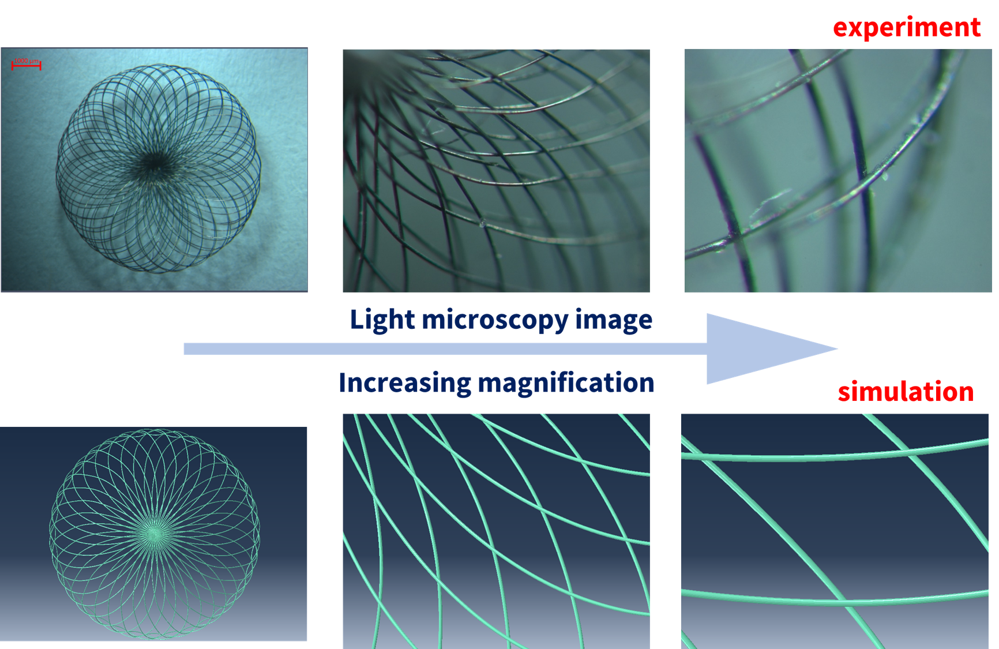
Current work treats the Contour implant as a contact-dominated braided structure. The final configuration is obtained from release history, braid elasticity, wall compliance, and friction, rather than being imposed as a post-treatment geometry.
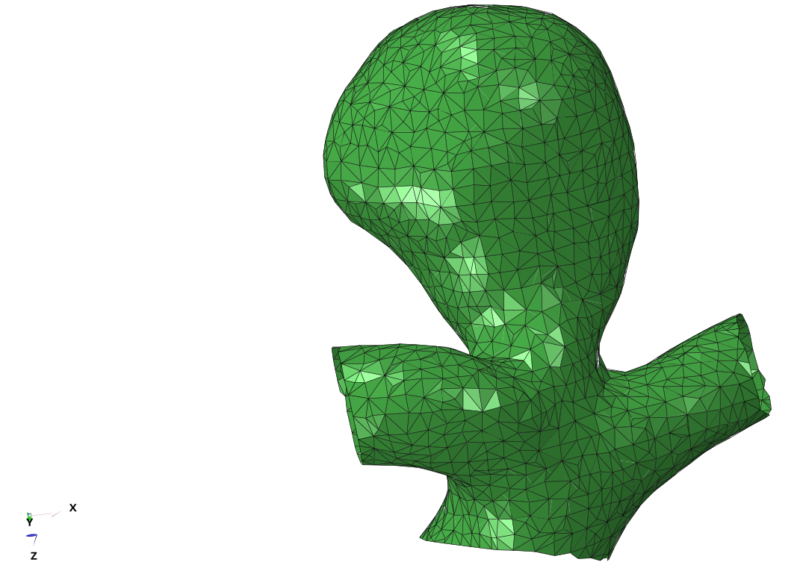
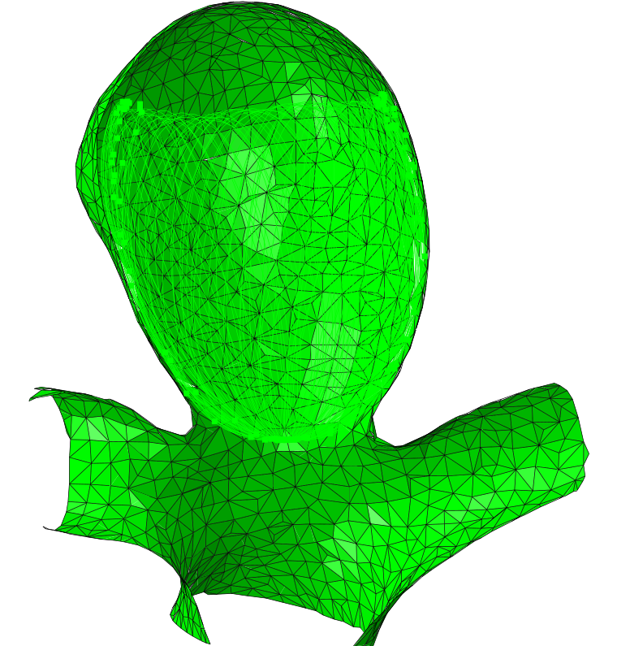
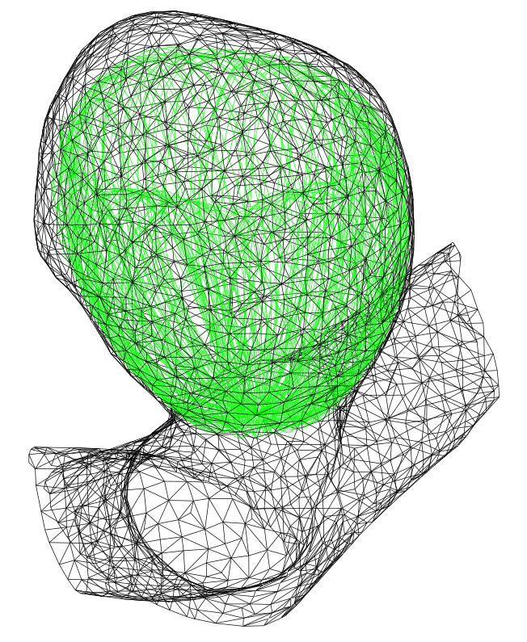
Magnetically actuated soft robots were studied through experiments and simulations to compare helical and undulatory swimming. The work links geometry, magnetization, elasticity, and viscous drag to measurable performance.
Soft robotic swarms develop organized motion through fluid-mediated interaction. The model reveals how spacing, actuation, and hydrodynamic coupling generate attraction, repulsion, and lateral drift.
Earlier publications established the material-mechanics foundation for later soft-robotic and biomedical-device work, spanning PVA hydrogels and xerogels, nanocellulose composites, piezocomposite creep, fractal viscoelasticity, and hard-magnetic soft materials.
V.K. Gopalakrishnan, R. Pramanik, A. Arockiarajan
Materials & Design 258, 114572, 2025
R. Pramanik, M. Park, Z. Ren, M. Sitti, R. Verstappen, P.R. Onck
Extreme Mechanics Letters 78, 102358, 2025
R. Pramanik, R.W.C.P. Verstappen, P.R. Onck
Nonlinear Dynamics, 2025
P. Narayanan, R. Pramanik, A. Arockiarajan
Advanced Engineering Materials, 2025
J.M. Chandra Hasa, P. Narayanan, R. Pramanik, A. Arockiarajan
Biomedical Materials, 2025
R. Pramanik, R.W.C.P. Verstappen, P.R. Onck
Physics of Fluids 36(10), 101302, 2024
R. Pramanik, R.W.C.P. Verstappen, P.R. Onck
Applied Physics Reviews 11(2), 021312, 2024
P. Narayanan, R. Pramanik, A. Arockiarajan
Smart Materials and Structures 33, 043001, 2024
P. Narayanan, R. Pramanik, A. Arockiarajan
Mechanics of Materials 184, 104722, 2023
P. Narayanan, R. Pramanik, A. Arockiarajan
European Journal of Mechanics A/Solids 98, 104874, 2023
R. Pramanik, R. Verstappen, P.R. Onck
Physical Review E 107(1), 014607, 2023
R. Pramanik, F. Soni, K. Shanmuganathan, A. Arockiarajan
Mechanics of Time-Dependent Materials 26, 257-270, 2022
R. Pramanik, A. Arockiarajan
Materials Letters 314, 131871, 2022
R. Pramanik, P.R. Onck, R.W.C.P. Verstappen
Advances in Robotics, ACM-TRS 2021
F. Ram, P. Kaviraj, R. Pramanik, A. Krishnan, K. Shanmuganathan, A. Arockiarajan
Journal of Alloys and Compounds 823, 153701, 2020
R. Pramanik, A. Narayanan, A. Rajan, S. Konar, A. Arockiarajan
International Journal of Engineering Science 144, 103144, 2019
R. Pramanik, A. Arockiarajan
Smart Materials and Structures 28(10), 103001, 2019
R. Pramanik, L. Santhosh, A. Arockiarajan
Meccanica 54, 1611-1622, 2019
A. Narayanan, A. Rajan, R. Pramanik, A. Arockiarajan
Materials Research Express 6(8), 085418, 2019
A. Rajan, A. Narayanan, R. Pramanik, A. Arockiarajan
Materials Research Express 6(5), 055320, 2019
R. Pramanik, A. Arockiarajan
Journal of the Mechanical Behavior of Biomedical Materials 90, 275-283, 2019
R. Pramanik, B. Ganivada, F. Ram, K. Shanmuganathan, A. Arockiarajan
Materials Letters 236, 222-224, 2019
P. Kaviraj, R. Pramanik, A. Arockiarajan
Ceramics International 45(9), 12344-12352, 2019
R. Pramanik, M.K. Sahukar, Y. Mohan, B. Praveenkumar, S.R. Sangawar, et al.
Ceramics International 45(5), 5731-5742, 2019
R. Pramanik, A. Arockiarajan
Philosophical Magazine 99(1), 1-21, 2019
R. Pramanik, A. Arockiarajan
Acta Mechanica 229, 4187-4198, 2018
R. Pramanik, A. Arockiarajan
Ceramics International 44(12), 13934-13943, 2018
B. Sikder, R. Pramanik, A. Chanda
Materialwissenschaft und Werkstofftechnik 48, 726-730, 2017
Academic training, supervision, conference presentations, and reviewing activity.
Project: Contact mechanics and fluid-structure interaction of endovascular devices for brain aneurysms. Institutsleitung: Prof. Alexander Popp.
Project: Nature-inspired magnetic soft robotic swimmers and swarms. ECTS: 53. Supervisors: Prof. Roel W.C.P. Verstappen and Prof. Patrick R. Onck.
Project: Experimental characterization on creep behavior of 1-3 piezocomposites. CGPA: 9.64/10. Supervisor: Prof. A. Arockiarajan.
Project: Mechanics of viscoelastic structures undergoing complex kinematics. CGPA: 8.97/10. Supervisors: Prof. A. Nandi and Prof. S. Neogy.